pages.ep
Exported at: Sat Jun 11 2011 14:02:25 GMT-0300 (BRT)
Biblioteca do IME - Página Inicial
- Clicar no box superior esquerdo loga no site como "Aluno42".
- O link "Cadastro" leva para a página de cadastro.
- Em geral, o box superior leva de volta para esta página.
- O box de pesquisa leva a uma página de pesquisa-exemplo.
- O link "Estatísticas" leva para a página de estatísticas.
- Os links "Sobre a biblioteca do IME" e "Contato" são meramente ilustrativos.
~~~~~~~~~~~~~~~~~~~~~~~~~~~~~~~~~~~~~~~~~~~~~~~~~~~~~~~~~~~~~~~~~~~~~~~~~~Biblioteca do IME - Página Inicial/Logado
- Versão logada como "Aluno42" da página inicial.
- Isso acontece com a maioria das páginas, portanto não será mais explicado.
~~~~~~~~~~~~~~~~~~~~~~~~~~~~~~~~~~~~~~~~~~~~~~~~~~~~~~~~~~~~~~~~~~~~~~~~~~Biblioteca do IME - Cadastro
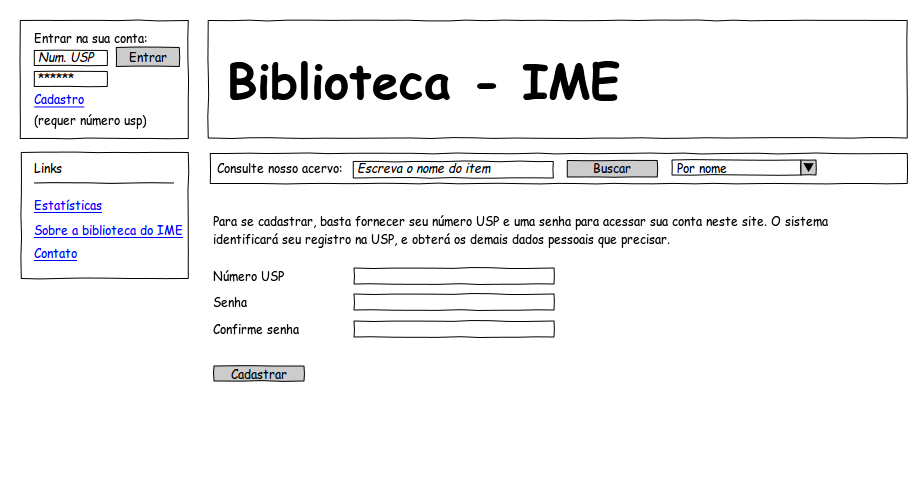
- Fizemos a hipótese de termos acesso a algum banco de dados da USP para simplificar essa página.
~~~~~~~~~~~~~~~~~~~~~~~~~~~~~~~~~~~~~~~~~~~~~~~~~~~~~~~~~~~~~~~~~~~~~~~~~~Biblioteca do IME - Busca: "The Art of Computer Programming"
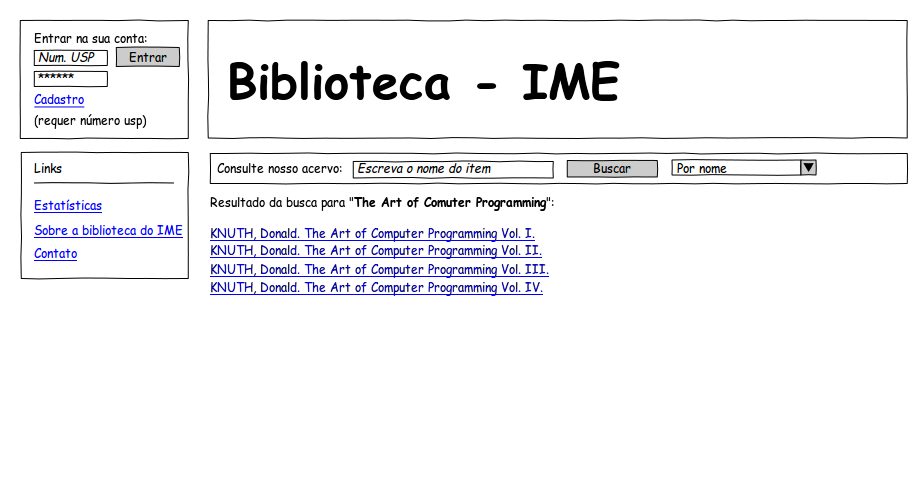
- Página de pesquisa-exemplo.
- Apenas o primeiro link do resultado funciona.
- Clicar novamente no box de pesquisa mostra uma segunda pesquisa-exemplo.
~~~~~~~~~~~~~~~~~~~~~~~~~~~~~~~~~~~~~~~~~~~~~~~~~~~~~~~~~~~~~~~~~~~~~~~~~~Biblioteca do IME - Busca: "The Art of Computer Programming"/Logado
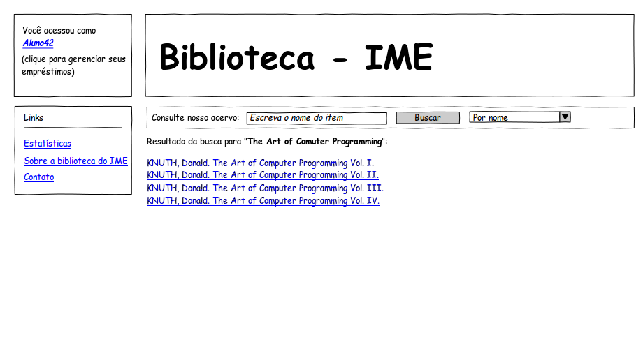
Biblioteca do IME - KNUTH, Donald. The Art of Computer Programming.
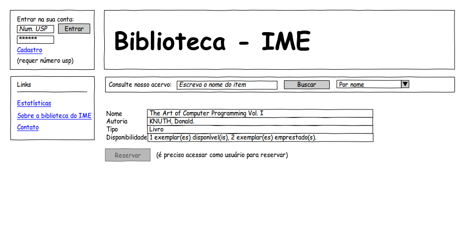
- Página com informações sobre um livro.
- A reserva fica disponível apenas quando logado.
- O campo "Disponibilidade", caso todos os exemplares estivessem emprestados, diria "0 exemplar(es) disponível(is), 3 exemplar(es) emprestado(s), 2 pessoa(s) na fila de espera."
~~~~~~~~~~~~~~~~~~~~~~~~~~~~~~~~~~~~~~~~~~~~~~~~~~~~~~~~~~~~~~~~~~~~~~~~~~Biblioteca do IME - KNUTH, Donald. The Art of Computer Programming./Logado
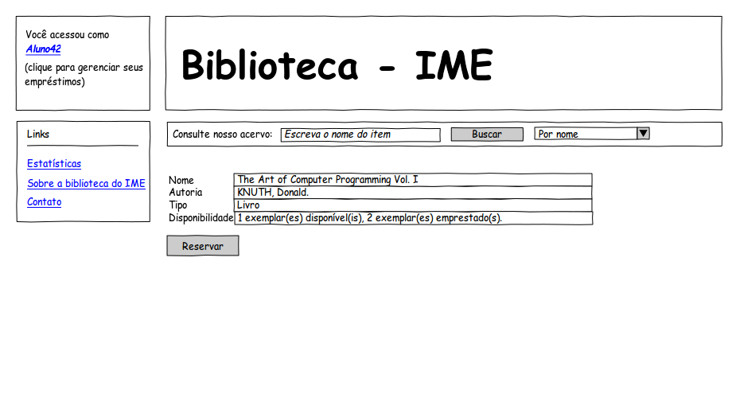
- Versão logada das informações de um livro: é possível reservar.
- Como nesse caso há um exemplar disponível, o usuário obteria diretamente a reserva.
- Caso não houvesse exemplares disponíveis, o usuário teria a possibilidade de entrar na "fila de espera". Isso impediria o usuário que está a mais tempo com um exemplar desse livro emprestado de renovar seu empréstimo. Se mais usuários entram na "fila de espera", o próximo usuário com maior tempo de empréstimo terá sua renovação para esse empréstimo bloqueada.
~~~~~~~~~~~~~~~~~~~~~~~~~~~~~~~~~~~~~~~~~~~~~~~~~~~~~~~~~~~~~~~~~~~~~~~~~~Biblioteca do IME - Aluno42
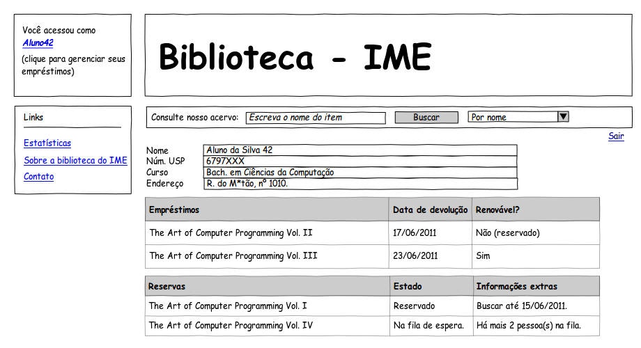
- Página com as informações de um usuário.
- Nesse exemplo, mostramos todos os possíveis estados de empréstimo e reserva possíveis a um usuário.
~~~~~~~~~~~~~~~~~~~~~~~~~~~~~~~~~~~~~~~~~~~~~~~~~~~~~~~~~~~~~~~~~~~~~~~~~~Biblioteca do IME - Periódico X
- Página com informações de um periódico.
- O campo "Disponibilidade" mostra as edições do periódico disponíveis no acervo.
- O link "Edições acessíveis on-line" leva para uma página com uma lista das edições disponíveis on-line, junto com o link respectivo a cada uma delas para o usuário poder acessar de fato os periódicos on-line.
~~~~~~~~~~~~~~~~~~~~~~~~~~~~~~~~~~~~~~~~~~~~~~~~~~~~~~~~~~~~~~~~~~~~~~~~~~Biblioteca do IME - Periódico X/Logado
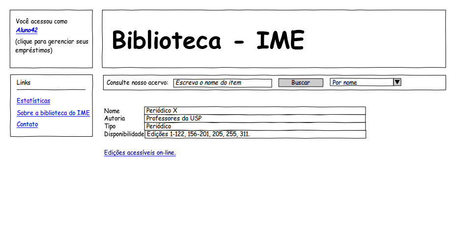
Biblioteca do IME - Template A
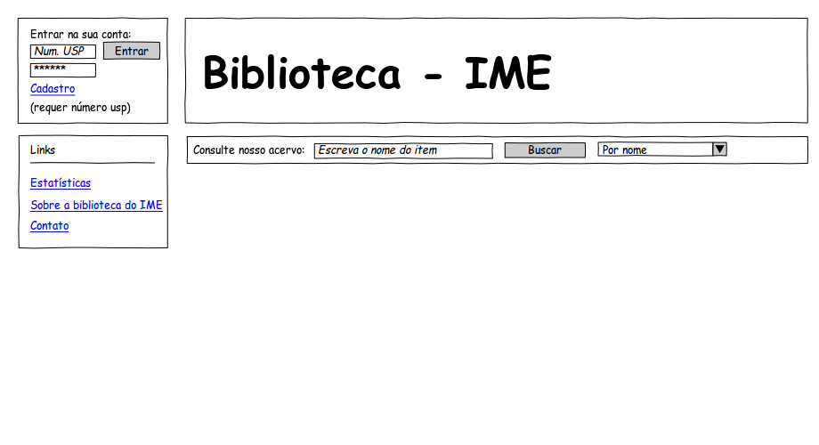
- Página template sem usuário logado.
~~~~~~~~~~~~~~~~~~~~~~~~~~~~~~~~~~~~~~~~~~~~~~~~~~~~~~~~~~~~~~~~~~~~~~~~~~Biblioteca do IME - Template B
- Página template com o "Aluno42" logado.
~~~~~~~~~~~~~~~~~~~~~~~~~~~~~~~~~~~~~~~~~~~~~~~~~~~~~~~~~~~~~~~~~~~~~~~~~~Biblioteca do IME - Busca: "Periódico X"
- Página de pesquisa-exemplo.
- Essa é a segunda página de pesquisa-exemplo.
- O link do resultado funciona.
- Clicar mais uma vez no box de pesquisa leva para a terceira e última pesquisa-exemplo.
~~~~~~~~~~~~~~~~~~~~~~~~~~~~~~~~~~~~~~~~~~~~~~~~~~~~~~~~~~~~~~~~~~~~~~~~~~Biblioteca do IME - Busca: "Periódico X"/Logado
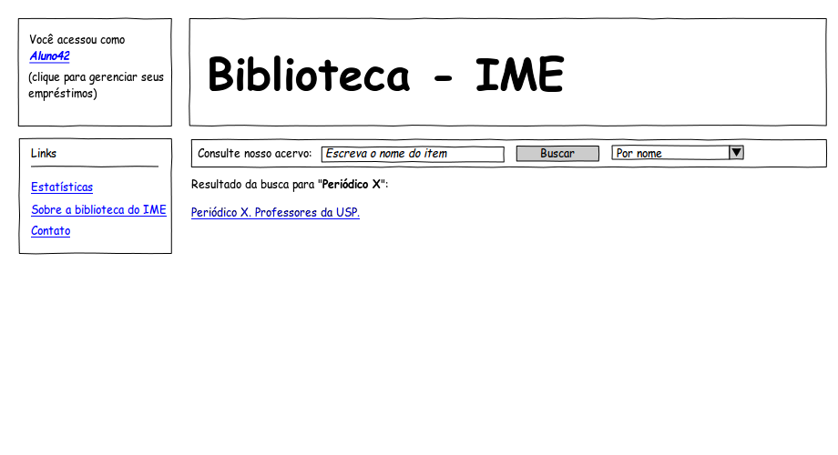
Biblioteca do IME - Busca: "Artigo X"
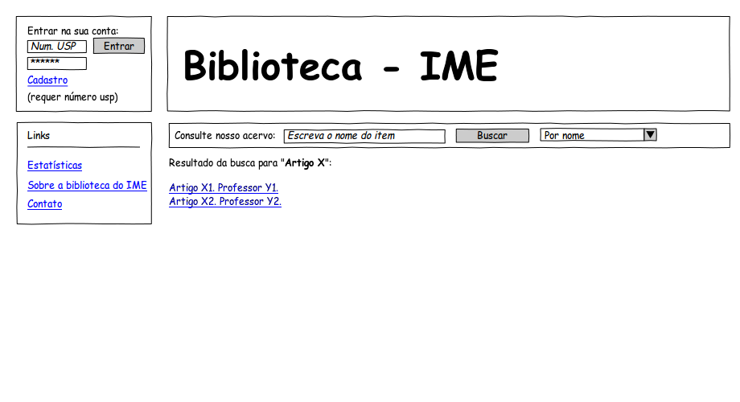
- Última página de pesquisa-exemplo.
- Os links dos dois artigos funcionam.
- Clicar no box de pesquisa leva de volta para a primeira página de pesquisa-exemplo.
~~~~~~~~~~~~~~~~~~~~~~~~~~~~~~~~~~~~~~~~~~~~~~~~~~~~~~~~~~~~~~~~~~~~~~~~~~Biblioteca do IME - Busca: "Artigo X"/Logado
Biblioteca do IME - Artigo X2
- Página com informações sobre um artigo.
- Nesse caso, o artigo está indisponível mas por algum motivo a biblioteca tem registro dele.
~~~~~~~~~~~~~~~~~~~~~~~~~~~~~~~~~~~~~~~~~~~~~~~~~~~~~~~~~~~~~~~~~~~~~~~~~~Biblioteca do IME - Artigo X2/Logado
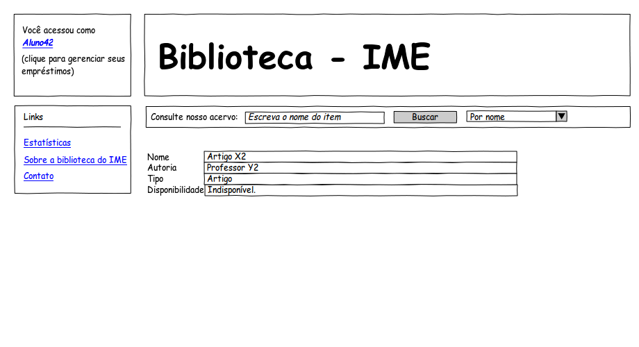
Biblioteca do IME - Artigo X1
- Outra página com informações de um artigo.
- Nesse caso, o artigo está disponível e a edição do periódico em que ele está também está disponível on-line. Ele poderia estar disponível fisicamente em uma edição de periódico, mas não on-line.
- O link "Artigo disponível on-line." leva para a página na qual o artigo está disponível.
~~~~~~~~~~~~~~~~~~~~~~~~~~~~~~~~~~~~~~~~~~~~~~~~~~~~~~~~~~~~~~~~~~~~~~~~~~Biblioteca do IME - Artigo X1/Logado
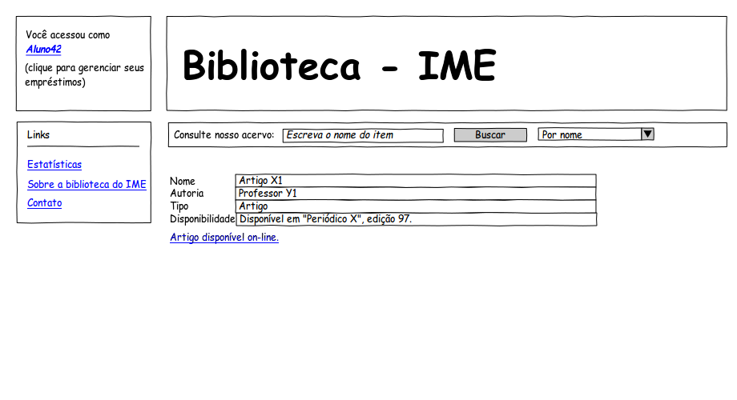
Biblioteca do IME - Estatísticas
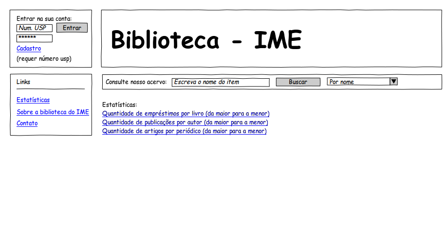
- Página com links para as estatísticas do acervo.
- Os links são meramente ilustrativos, mas representam estatísticas possíveis de se fazer no banco de dados.
~~~~~~~~~~~~~~~~~~~~~~~~~~~~~~~~~~~~~~~~~~~~~~~~~~~~~~~~~~~~~~~~~~~~~~~~~~Biblioteca do IME - Estatísticas/Logado
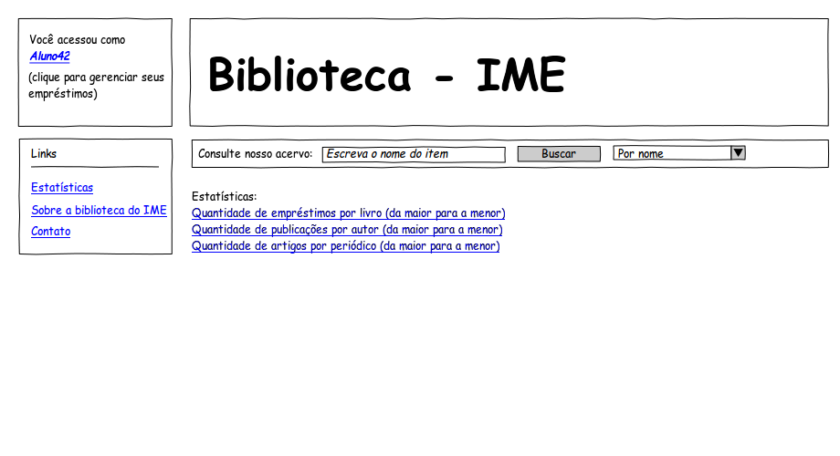